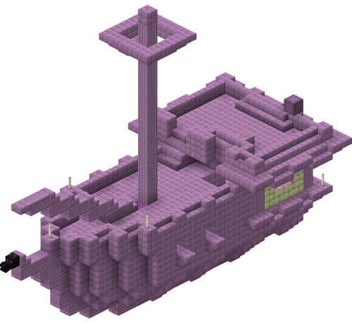
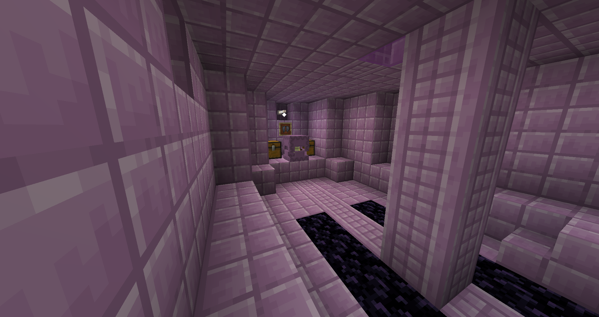
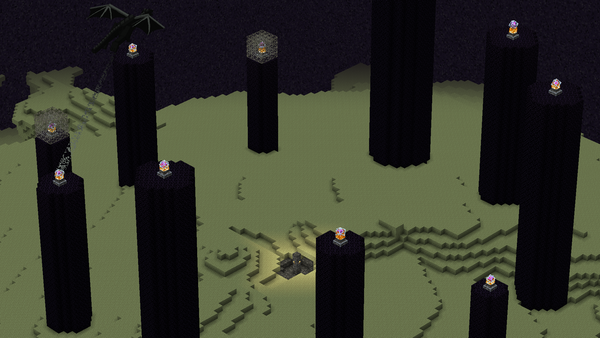
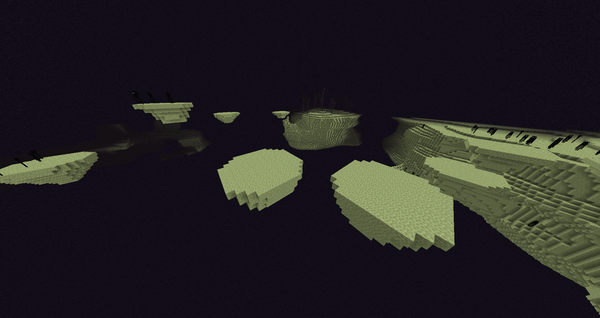
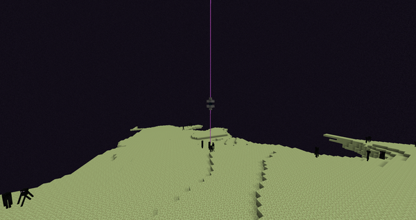
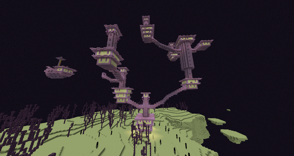
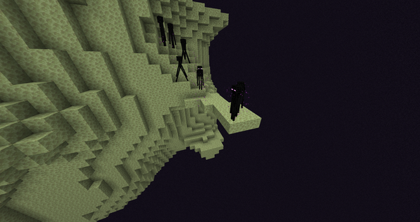

The End is one of Minecraft's 3 dimensions. This dimension is often considrered as the final one in the game since this is where the Ender Dragon fight takes place. Unlike the other 2 dimensions, the End is an almost lifeless and empty place filled with end islands surrounded by the dark void. Unlike the Nether, this dimension doesn't have any fog for its atmosphere. This dimension has the least amount of biomes and structures out of the 3 dimensions in the game. Your main goal here is to defeat the final boss of Minecraft, the Ender Dragon.
An image of the End Dimension, featuring the main End Island in the middle and the outer end islands:

The Ender Dragon, the game's final boss:

Similarly to the nether, you will need a portal to enter this dimension. Unlike the Nether portal however, the End portal cannot be built. Instead, you need to find an end portal inside a stronghold and activate it using eye-of-enders.
2 images of an end portal (left: inactive, right: active):


Unlike this other 2 dimensions, the End only has 1 structure. The End's only structure is the End City. End cities can naturally spawn in the large outer end islands. End cities are tall purple buildings composed of End stone bricks, purpur blocks and end rods for light. End cities may generate as either a single building or a group of connected buildings. The main inhabitants of end cities are shulkers, which are hostile mobs that levitate you when you get hit by their attack. These shulkers guard the loot in these buildings. The loot here is usually high-quality armor/weapons meant for end-game purposes.
Images of an end city as seen from the outside and inside:


The End Ship is a floating structure which can sometimes be found beside end cities. The ship is made of purpur blocks and endstone bricks, just like the end cities. The end ship contains loot that's more valuable compared to the loot in the end city. Inside the ship contains a treasure room. The treasure room contains 2 chests and an guaranteed elytra in the middle. The end ship is the only structure in the game where you can obtain an elytra.
An image of the End Ship and the treasure room
An image of the treasure room, which is being guarded by 1 shulker:
Unlike the other 2 dimensions, the biomes in the End don't differ much from each other in terms of appearance, mobs and terrain.
The main end island is the first area you'll spawn in once you enter the end portal. This is the island where you fight the ender dragon. The island is made up of end stone and obsidian pillars which contain end crystals. The inhabitants of this island are endermen and of course, the ender dragon. After defeating the ender dragon, end gateways will oepn up, which will allow you to teleport to the outer end islands. Also, once the ender-dragon is defeated, a huge portal made up of bedrock in the middle of the island will oepn up. This portal will let you teleport back to the overworld.
An image of the main end island:
This biome generates as part of the outer islands of the End. These are tiny circular islands made up of end stone. Endermen inhabit this biome.
An image of the small end islands:
This biome generates as part of the outer islands of the End. This biome represents the gradual slope from the hilltops of each island down to the cliffs around the edge. The inhabitans of this biome are endermen. End cities have a chance of spawning in this biome too.
An image of the end midlands along with an end gateway:
This biome generates as part of the outer islands of the End. Thus biome represents the hilltops of the outer end islands. End cities and large amounts of chorus trees spawn in this biome. The inhabitants of this biome are endermen.
An image of the end highlands along with an end city:
This biome generates as part of the outer islands of the End. This is a tiny biome that represents the outer rims of each end island. Chorus trees and end cities cannot generate naturally in this biome. Just like any other end biome, the inhabitants of this biome are endermen.
An image of the End Barrens:
